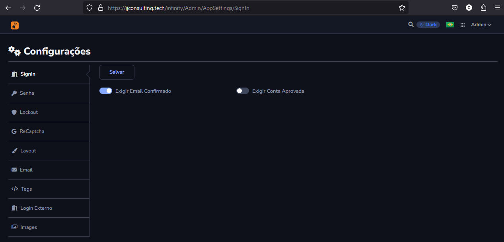
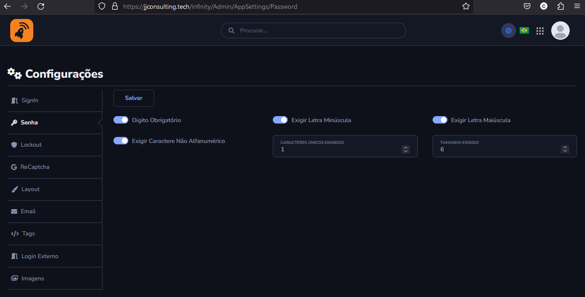
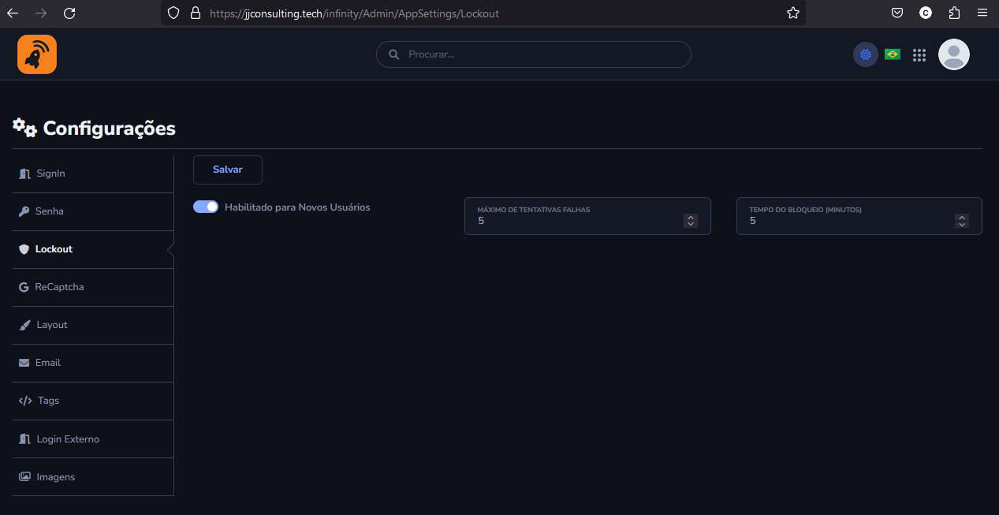
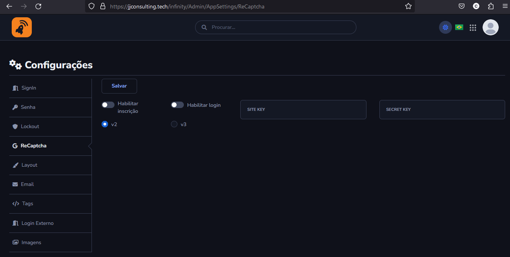
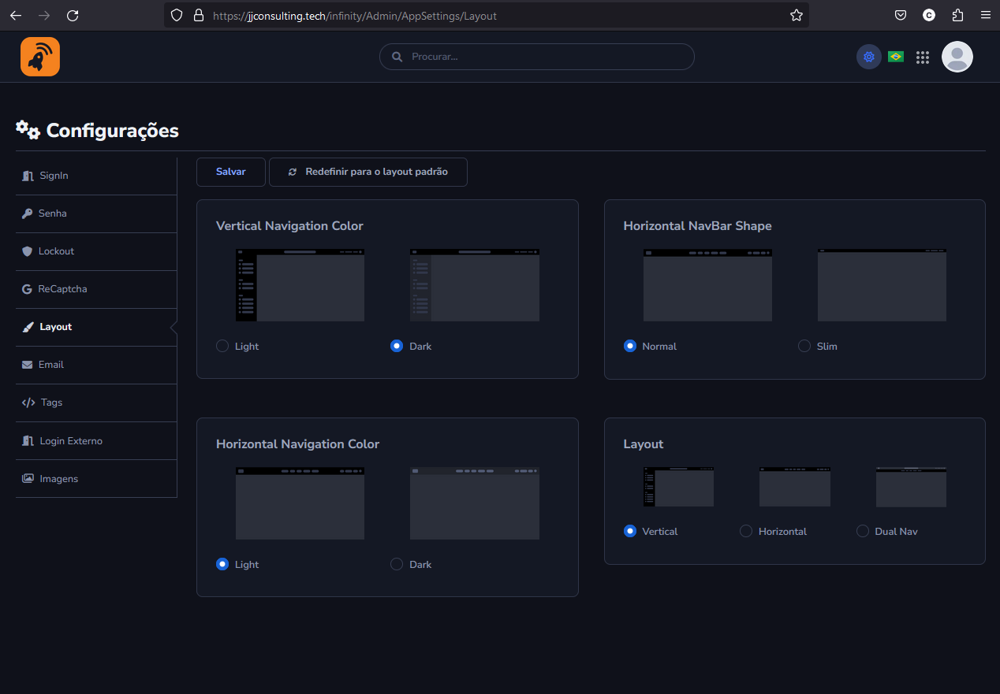
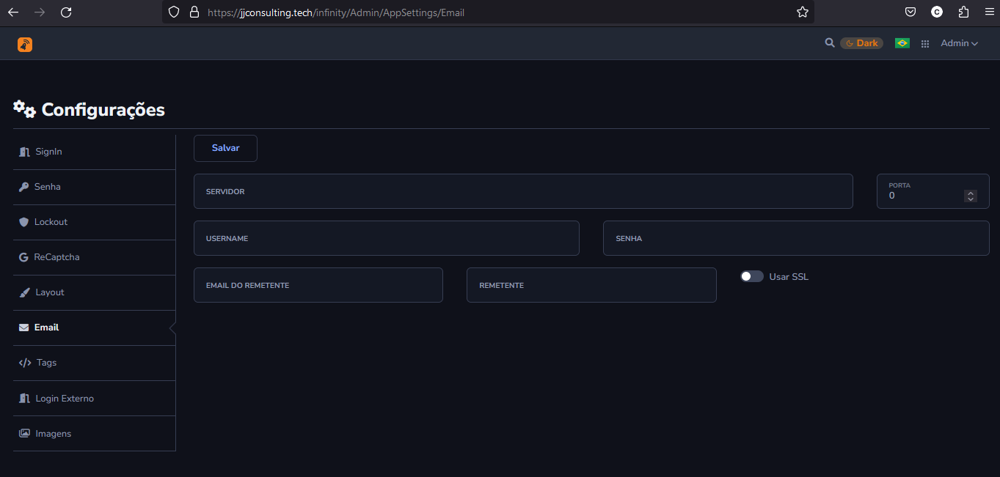
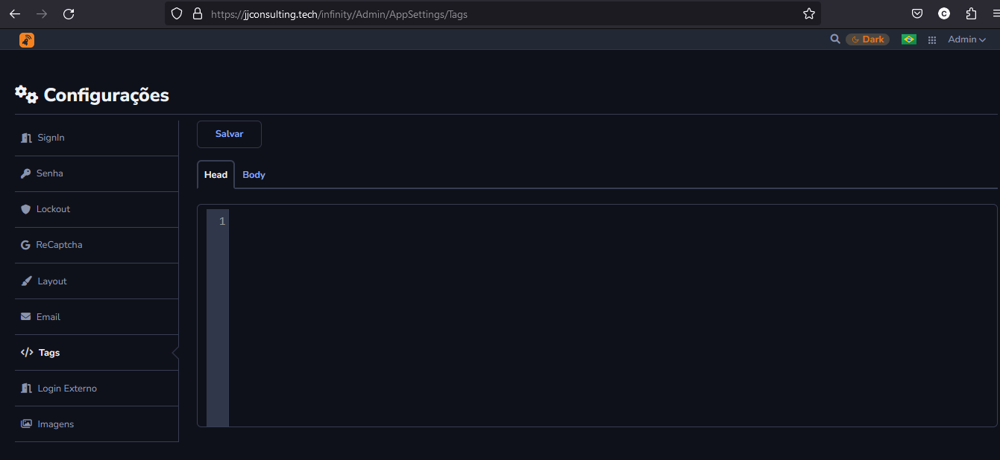
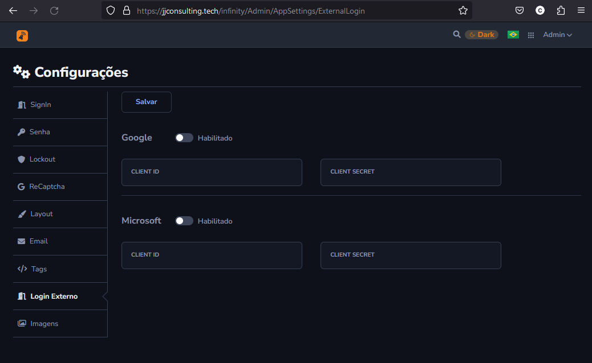
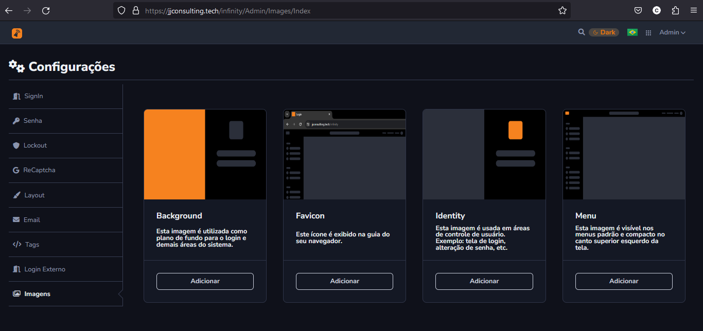

Configurações
Está é a parte de Configuração de Admin
Configurações de SingIn

- Exigir Email Confirmado:
- Requer que os usuários confirmem seu endereço de e-mail antes de acessarem o sistema. Após o registro, o sistema envia um e-mail de confirmação para o endereço fornecido pelo usuário. O usuário deve clicar no link de confirmação para ativar sua conta. Usuários que não confirmaram o e-mail não conseguem fazer login.
- Exigir Conta Aprovada
- Requer que as contas de novos usuários sejam aprovadas por um administrador antes do acesso ao sistema. Após a confirmação do e-mail (se configurado), a conta do usuário entra em estado pendente. Um administrador deve aprovar a conta do usuário no painel de administração. Usuários com contas não aprovadas não conseguem fazer login. Após a aprovação a conta o Usuário estara com o perfil de Guest.
Configurações de Senha

- Digito Obrigatório
- Obrigatorio que a Senha contenha pelo menos um dígito
- Exigir Caractere Não Alfanumérico
- Requer que a senha contenha pelo menos um caractere não alfanumérico
- Exigir Letra Minúscula
- Requer que a senha contenha pelo menos uma letra minúscula
- Exigir Letra Maiúscula
- Requer que a senha contenha pelo menos uma letra maiúscula
- Caracteres Únicos
- Define o número mínimo de caracteres únicos que devem estar presentes na senha
- Tamanho Exigido
- Define o comprimento mínimo exigido para a senha.
Configuração de Lockout

- Habilitado para Novos Usuários
- Determina se o recurso de bloqueio está ativado para novos usuários.
- Máximo de Tentativas Falhas
- Define o número máximo de tentativas de login falhas permitidas antes que a conta seja bloqueada.
- Tempo do Bloqueio (Minutos)
- Define a duração do bloqueio em minutos após o número máximo de tentativas de falhas for atingido [Exemplo: Bloqueio de 5 minutos após 5 falhas atingidas].
ReCaptcha

- Habilitar Inscrição
- Ativa o ReCaptcha no formulário de inscrição de novos usuários.
- Habilitar Login
- Ativa o ReCaptcha no formulário de login de usuários existentes.
- V2 / V3
- Seleciona a versão do ReCaptcha a ser utilizada (V2 ou V3)
- Site Key / Secret Key
- Chaves do ReCaptcha Usadas no site.
Para saber como Configurar o Google ReCaptcha, Clique aqui
Configurações de Layout

- Vertical Navigation Color
- Define a cor da navegação vertical.
- Horizontal Navigation Color
- Define a cor da navegação horizontal.
- Horizontal NavBar Shape
- Define o formato da barra de navegação horizontal
- Layout
- Defini qual o tipo e formato de layout.
Configurações de Email

- Configurações de Email tem objetivo de enviar para o Email como Esqueci a Senha.
"A Função Esqueci Minha senha só estará habilitado se houver as Configurações de Email."
Configurações de Tags

- Objetivo de permitir Tags customizadas no cabeçalho do HTML a inclusão de scripts customizados, como Google Tag Manager ou estilos(CSS para mudar o tema da aplicação), é possivel tambem colocar no Body caso houver necessidade (carregado apenas no final).
Configurações de Login Externo

- Login com conta Google
Ativa a opção de login usando uma conta do Google, Client ID e Client Secret são os identificadores e a senha.
- Login com conta Microsoft
Ativa a opção de login usando uma conta da Microsoft, Client ID e Client Secret são os identificadores e a senha.
Configurações de Imagens

- Configurações para trocar Imagens das demais áreas do sistema.